Candidate List 20260704Last night — ZTF: 2,743 passed basic cuts (45 young) · LSST: 0 passed basic cuts (0 young)Previous Day Next Day
Section 1: New Sources (age<1d) Section 2: Old (1-5d) sources observed last nightplaceholder
Section 1: New Afterglow/FBOT Cands Last Night (0)
Section 2: Older Sources Observed Last Night (12)
0. [ZTF] ZTF26abekjzj (Afterglow?FBOT?) [Back to Top] [Share] [Trigger Swift] [Fritz Alert] [Fritz Source] [Lasair]RA, Dec: 239.90437, 7.85036 15h59m37.05s, 7d51m1.30sGalactic (l, b): 18.52519, 41.5335 ext(g-r) = 0.044


TESS: Sectors [ 51 117]
PS1: 0 sources in 3 arcsec
LegacySurvey: 1 sources in 3 arcsec Closest: d = 3.34 arcsec, 220.4 deg (east of north) photoz=0.12 (68% bounds 0.01, 0.68), type=PSF peak abs mag = -20.32 (68% bounds -15.56, -24.66)

Extinction-corrected gr color:
From alerts: -0.13 +/- 0.2 mag
Extinction-corrected gi color:
From alerts: -0.41 +/- 0.23 mag
Extinction-corrected ri color:
From alerts: -0.28 +/- 0.22 mag
Consistent with synchrotron, g-r>0!
Rise Rate:
g: 0.44 mag/day
r: 0.32 mag/day
i: 0.06 mag/day
Fade Rate:
g: 0.2 mag/day
r: 0.16 mag/day
1. [ZTF] ZTF26abekljt (FBOT?) [Back to Top] [Share] [Trigger Swift] [Fritz Alert] [Fritz Source] [Lasair]RA, Dec: 234.6287, 3.50544 15h38m30.89s, 3d30m19.60sGalactic (l, b): 9.72721, 43.6635 ext(g-r) = 0.068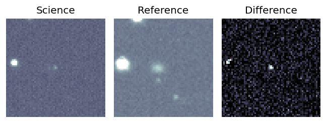
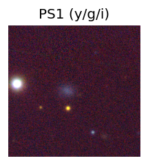
TESS: Sectors [ 51 117]
SDSS (<15 kpc):Found SDSS phot-z: z=0.07; peak abs mag = -19.62
PS1: 0 sources in 3 arcsec
LegacySurvey: 1 sources in 3 arcsec Closest: d = 3.14 arcsec, 226.9 deg (east of north) photoz=0.43 (68% bounds 0.37, 0.52), type=PSF peak abs mag = -23.73 (68% bounds -23.29, -24.23)
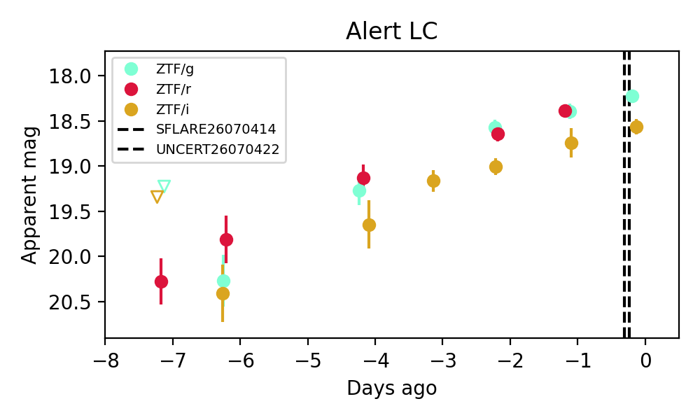
Extinction-corrected gr color:
From alerts: -0.06 +/- 0.11 mag
Extinction-corrected gi color:
From alerts: -0.44 +/- 0.11 mag
Extinction-corrected ri color:
From alerts: -0.39 +/- 0.17 mag
Consistent with synchrotron, g-r>0!
Rise Rate:
g: 0.27 mag/day
r: 0.29 mag/day
i: 0.25 mag/day
Fade Rate:
2. [ZTF] ZTF26abekuqw (Afterglow?) [Back to Top] [Share] [Trigger Swift] [Fritz Alert] [Fritz Source] [Lasair]RA, Dec: 232.54213, -27.84644 15h30m10.11s, -27d-50m-47.18sGalactic (l, b): 340.80324, 23.11787 ext(g-r) = 0.171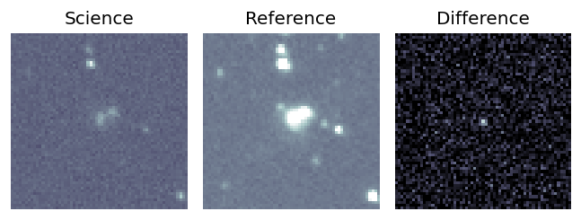
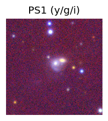
TESS: Sectors [ 11 38 65 91 115]
NED (10 arcsec):Found NED spec-z: z=0.07; peak abs mag = -19.04
PS1: 0 sources in 3 arcsec
LegacySurvey: 1 sources in 3 arcsec Closest: d = 1.84 arcsec, 342.8 deg (east of north) photoz=0.08 (68% bounds 0.06, 0.1), type=SER peak abs mag = -18.82 (68% bounds -18.12, -19.39)
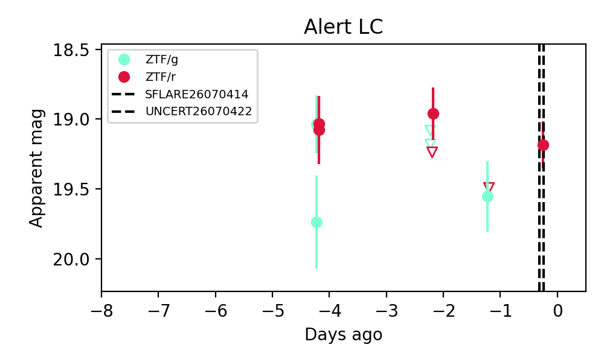
Extinction-corrected gr color:
From alerts: -0.11 +/- 99 mag
Rise Rate:
g: 0.09 mag/day
r: 0.06 mag/day
Fade Rate:
r: 0.54 mag/day
3. [ZTF] ZTF26abemmvh (Afterglow?) [Back to Top] [Share] [Trigger Swift] [Fritz Alert] [Fritz Source] [Lasair]RA, Dec: 282.06094, 57.70769 18h48m14.63s, 57d42m27.70sGalactic (l, b): 87.43335, 23.08429 ext(g-r) = 0.067


TESS: Sectors [ 15 16 17 18 19 20 21 22 23 24 26 40 41 47 48 49 50 51
52 53 54 55 56 57 58 59 60 73 74 75 76 77 78 79 80 81
81 82 83 84 86 117 118 119 120 121]
PS1: 0 sources in 3 arcsec
LegacySurvey: 1 sources in 3 arcsec Closest: d = 0.14 arcsec, 2.6 deg (east of north) photoz=1.12 (68% bounds 0.64, 1.4), type=PSF peak abs mag = -28.61 (68% bounds -27.12, -29.2)

Extinction-corrected gr color:
From alerts: -0.36 +/- 0.04 mag
Rise Rate:
g: 0.7 mag/day
r: 0.58 mag/day
Fade Rate:
g: 0.22 mag/day
r: 0.22 mag/day
4. [ZTF] ZTF26abemkvx (Afterglow?) (TNS: 2) [Back to Top] [Share] [Trigger Swift] [Fritz Alert] [Fritz Source] [Lasair]RA, Dec: 289.2679, 46.38841 19h17m4.30s, 46d23m18.26sGalactic (l, b): 77.6813, 15.16671 ext(g-r) = 0.098


TESS: Sectors [ 14 15 40 41 53 54 55 74 75 80 82 119 120]
PS1: 0 sources in 3 arcsec
LegacySurvey: 0 sources in 3 arcsec

Extinction-corrected gr color:
From alerts: -3.16 +/- 99 mag
Rise Rate:
r: 2.53 mag/day
Fade Rate:
g: 0.16 mag/day
r: 2.89 mag/day
5. [ZTF] ZTF26abepwdg (Afterglow?FBOT?) [Back to Top] [Share] [Trigger Swift] [Fritz Alert] [Fritz Source] [Lasair]RA, Dec: 17.0528, 15.82911 1h 8m12.67s, 15d49m44.78sGalactic (l, b): 128.83601, -46.85027 ext(g-r) = 0.101


TESS: Sectors [17 42 43 57 70 84]
SDSS (<15 kpc):Found SDSS phot-z: z=0.37; peak abs mag = -23.96
PS1: 0 sources in 3 arcsec
LegacySurvey: 1 sources in 3 arcsec Closest: d = 0.99 arcsec, 85.1 deg (east of north) photoz=1.41 (68% bounds 0.97, 2.12), type=PSF peak abs mag = -27.31 (68% bounds -26.29, -28.39)

Extinction-corrected gr color:
From alerts: -0.03 +/- 0.1 mag
Extinction-corrected gi color:
From alerts: -0.28 +/- 0.13 mag
Extinction-corrected ri color:
From alerts: -0.25 +/- 0.12 mag
Consistent with synchrotron, g-r>0!
Rise Rate:
r: 0.21 mag/day
i: 0.69 mag/day
Fade Rate:
i: 0.72 mag/day
6. [ZTF] ZTF26abeqtrl (FBOT?) [Back to Top] [Share] [Trigger Swift] [Fritz Alert] [Fritz Source] [Lasair]RA, Dec: 249.82341, 34.02119 16h39m17.62s, 34d 1m16.28sGalactic (l, b): 55.72006, 41.0916 ext(g-r) = 0.023


TESS: Sectors [ 24 25 51 52 78 79 117]
SDSS (<15 kpc):Found SDSS phot-z: z=0.25; peak abs mag = -21.27
PS1: 0 sources in 3 arcsec
LegacySurvey: 1 sources in 3 arcsec Closest: d = 1.40 arcsec, 174.4 deg (east of north) photoz=0.05 (68% bounds 0.02, 0.09), type=SER peak abs mag = -17.28 (68% bounds -15.24, -18.76)

Extinction-corrected gr color:
From alerts: -0.2 +/- 0.16 mag
Rise Rate:
g: 0.36 mag/day
r: 0.35 mag/day
Fade Rate:
7. [ZTF] ZTF26abernyf (Afterglow?) [Back to Top] [Share] [Trigger Swift] [Fritz Alert] [Fritz Source] [Lasair]RA, Dec: 265.53185, 39.37597 17h42m7.64s, 39d22m33.50sGalactic (l, b): 64.84986, 29.61556 ext(g-r) = 0.046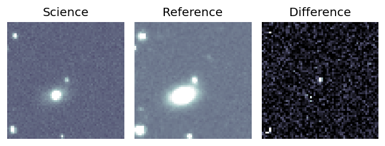
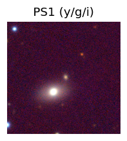
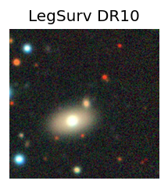
TESS: Sectors [ 25 26 40 52 53 79 80 117 118]
NED (10 arcsec):Found NED spec-z: z=0.05; peak abs mag = -17.02
PS1: 0 sources in 3 arcsec
LegacySurvey: 1 sources in 3 arcsec Closest: d = 0.92 arcsec, 263.4 deg (east of north) photoz=0.15 (68% bounds 0.12, 0.21), type=SER peak abs mag = -19.39 (68% bounds -18.75, -20.12)
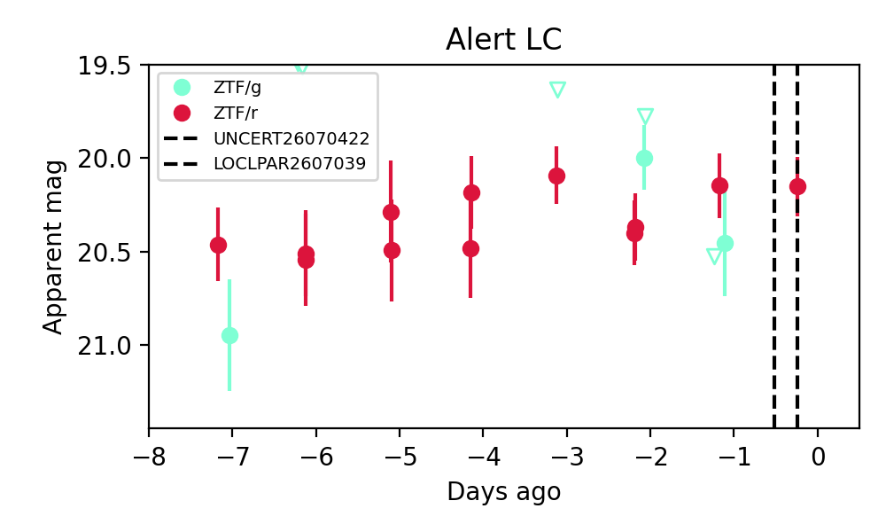
Extinction-corrected gr color:
From alerts: 0.26 +/- 0.33 mag
Consistent with synchrotron, g-r>0!
Rise Rate:
g: 0.14 mag/day
Fade Rate:
g: 0.63 mag/day
8. [ZTF] ZTF26abeupwu (FBOT?) [Back to Top] [Share] [Trigger Swift] [Fritz Alert] [Fritz Source] [Lasair]RA, Dec: 266.47039, -18.48889 17h45m52.89s, -18d-29m-20.01sGalactic (l, b): 8.97601, 5.36813 WARNING: 4.91 deg from ecliptic plane ext(g-r) = 0.852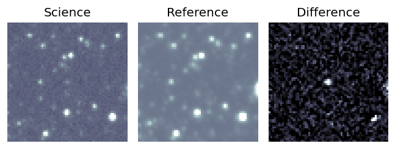
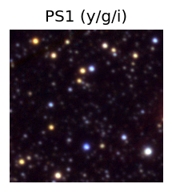
TESS: Sectors [ 91 92 115 116]
PS1: 1 source in 3 arcsec Closest: d = 0.29 arcsec photoz=1.20+/-0.02 peak abs mag = -28.26
LegacySurvey: 0 sources in 3 arcsec
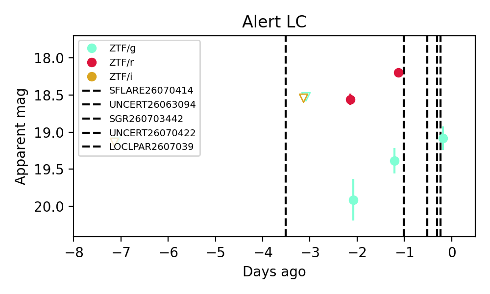
Extinction-corrected gr color:
From alerts: 0.34 +/- 0.18 mag
Consistent with synchrotron, g-r>0!
Rise Rate:
g: 0.4 mag/day
r: 0.35 mag/day
Fade Rate:
9. [ZTF] ZTF26abevnnb (Afterglow?) [Back to Top] [Share] [Trigger Swift] [Fritz Alert] [Fritz Source] [Lasair]RA, Dec: 274.52565, 57.31461 18h18m6.16s, 57d18m52.60sGalactic (l, b): 86.09811, 26.96453 ext(g-r) = 0.047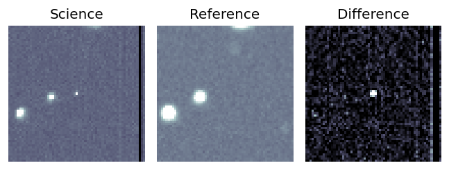
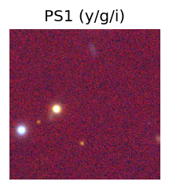
TESS: Sectors [ 14 15 16 17 18 19 21 22 23 24 25 26 41 47 48 49 50 51
52 53 54 55 56 57 58 59 60 73 74 75 76 77 78 79 80 81
82 83 84 85 86 117 118 119 120 121]
PS1: 0 sources in 3 arcsec
LegacySurvey: 1 sources in 3 arcsec Closest: d = 8.27 arcsec, 131.0 deg (east of north) photoz=0.83 (68% bounds 0.51, 1.09), type=REX peak abs mag = -24.76 (68% bounds -23.47, -25.49)
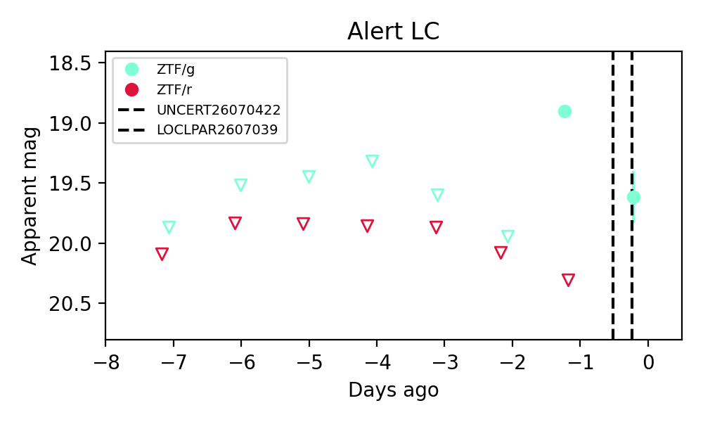
Extinction-corrected gr color:
From alerts: -1.45 +/- 99 mag
Rise Rate:
g: 1.24 mag/day
Fade Rate:
g: 0.7 mag/day
10. [ZTF] ZTF26abevyle (FBOT?) [Back to Top] [Share] [Trigger Swift] [Fritz Alert] [Fritz Source] [Lasair]RA, Dec: 290.64412, 15.30921 19h22m34.59s, 15d18m33.17sGalactic (l, b): 50.06282, 0.23614 ext(g-r) = 9.068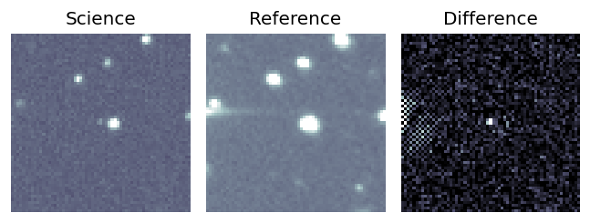
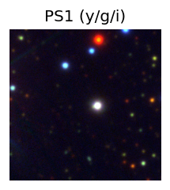
TESS: Sectors [ 14 40 54 81 119]
PS1: 1 source in 3 arcsec Closest: d = 4.76 arcsec photoz=0.18+/-0.03 peak abs mag = -48.55
LegacySurvey: 0 sources in 3 arcsec
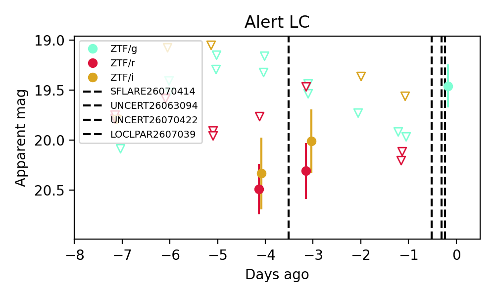
Extinction-corrected gr color:
From alerts: -9.84 +/- 99 mag
Extinction-corrected gi color:
From alerts: -14.45 +/- 99 mag
Extinction-corrected ri color:
From alerts: -4.61 +/- 0.42 mag
Rise Rate:
g: 0.57 mag/day
Fade Rate:
11. [ZTF] ZTF26abexcim (FBOT?) [Back to Top] [Share] [Trigger Swift] [Fritz Alert] [Fritz Source] [Lasair]RA, Dec: 269.68276, 4.42137 17h58m43.86s, 4d25m16.94sGalactic (l, b): 30.86565, 13.73466 ext(g-r) = 0.192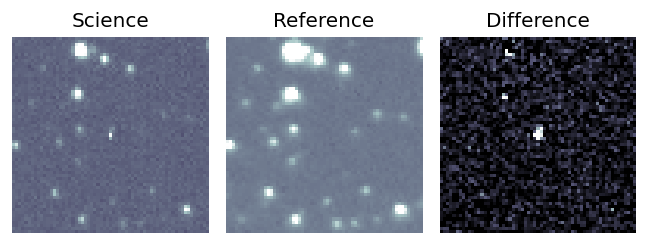
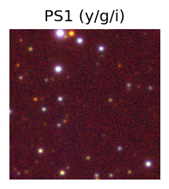
TESS: Sectors [ 80 118]
PS1: 1 source in 3 arcsec Closest: d = 9.89 arcsec photoz=0.80+/-0.07 peak abs mag = -25.11
LegacySurvey: 0 sources in 3 arcsec
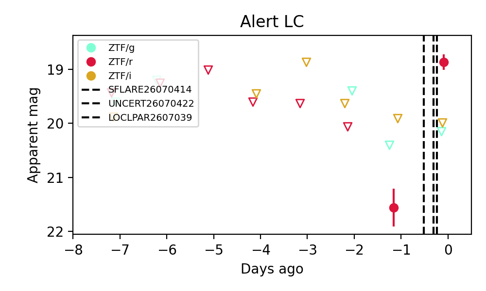
Extinction-corrected gr color:
From alerts: 1.09 +/- 99 mag
Extinction-corrected ri color:
From alerts: -1.23 +/- 99 mag
Rise Rate:
r: 2.53 mag/day
Fade Rate: